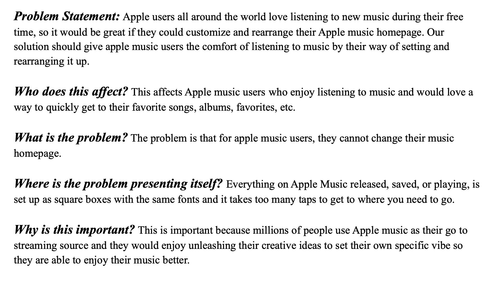
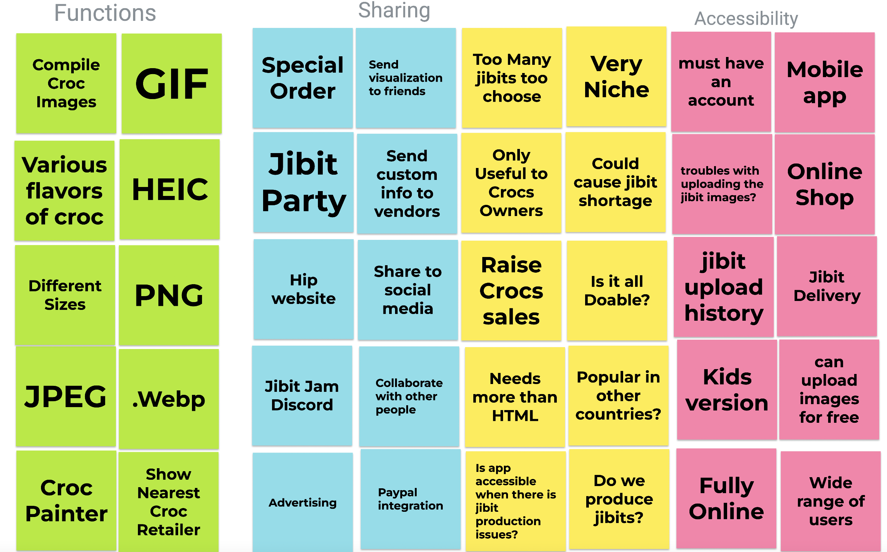
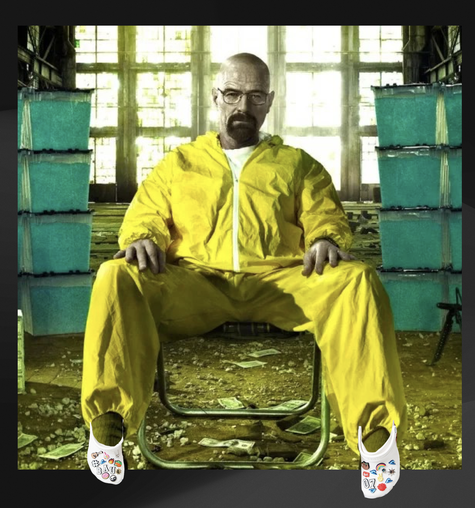
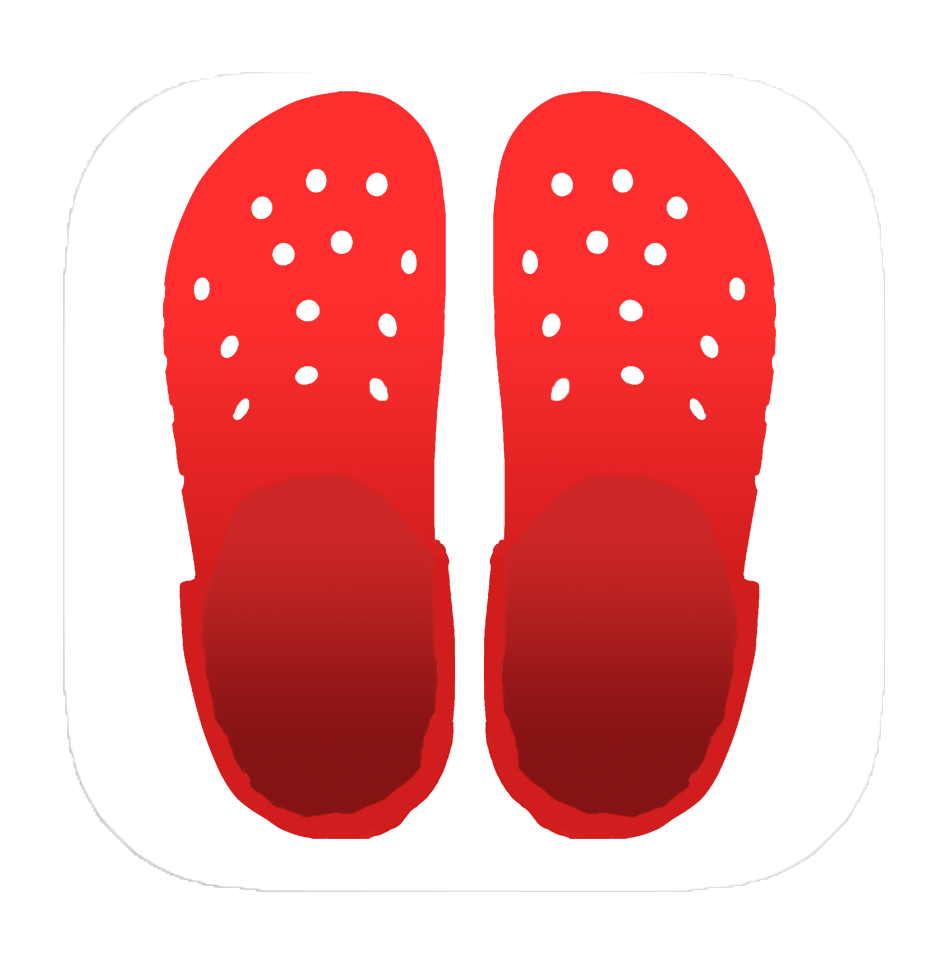
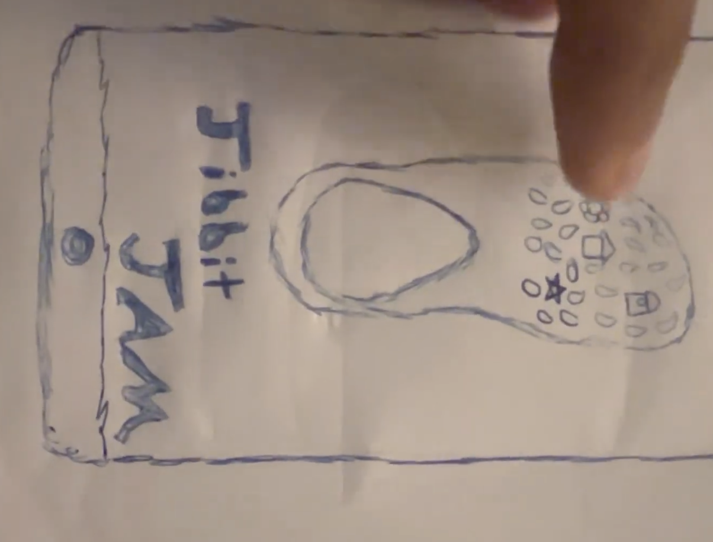
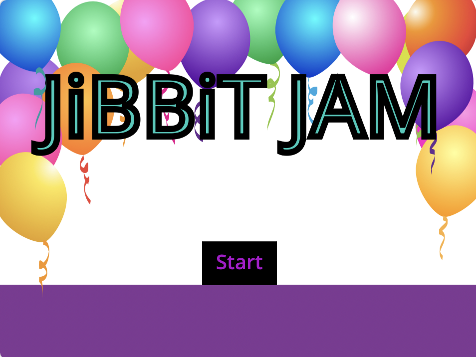

Problem Statement: Jibit Jam: A Croc Visualizer
We all love crocs™ brand shoes, but it's hard to see what your jibbitz will look like on the shoes until after you buy them. Our solution is to allow users to visualize their crocs with their desired jibbitz before buying them.
Affinity Diagram: Jibit Jam: A Croc Visualizer
Our notes are the stickiest in the land, you will never find notes as sticky as ours. They are world renound, praised around the globe. Some of them even have words on them!
Personas: Our Prime Demographic

As seen in the image above these individuals LOVE Crocs and jibbitz alike, they are the perfect (completly real) group of individuals who love our services.
Storyboards: Our personas using our app in real circumstances
As stated in the previous assingment these (completly real) individuals love Jibit Jam and have used it in situations depicted here.
Sketches: Our app begins its visualization stage
Isn't it beautiful, our app has been rendered in gorgeous resolution, at least 420p!
Paper Prototype: Our app continues its visualization stage
Isn't it good enough, our app has been rendered in paper, at least one tree killed!
Hi-Fi Prototype: It's done, we did it.
We did it on scratch, peak coding language.